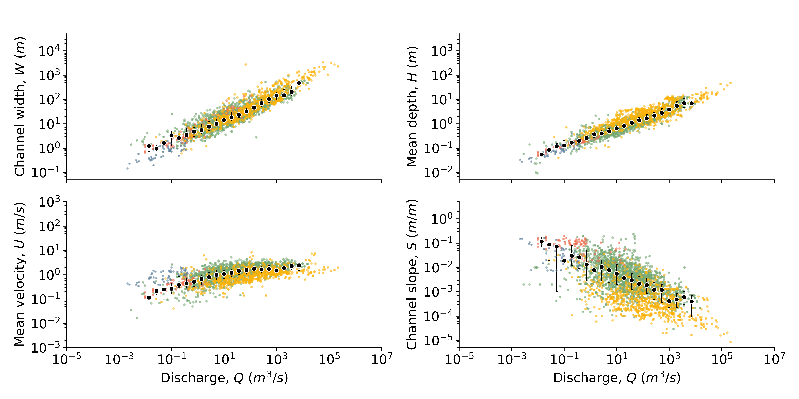
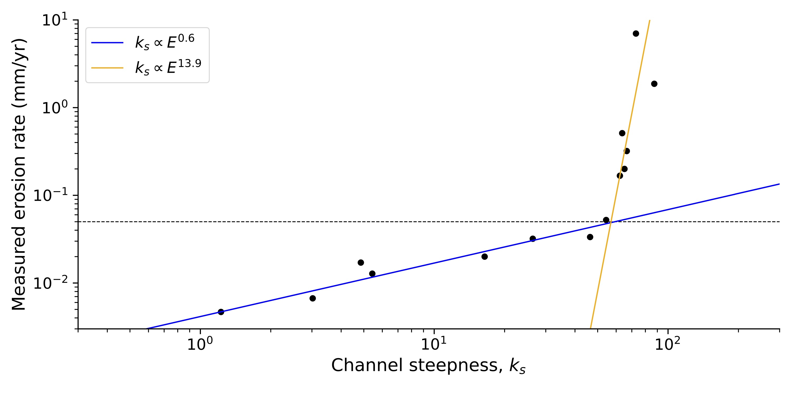
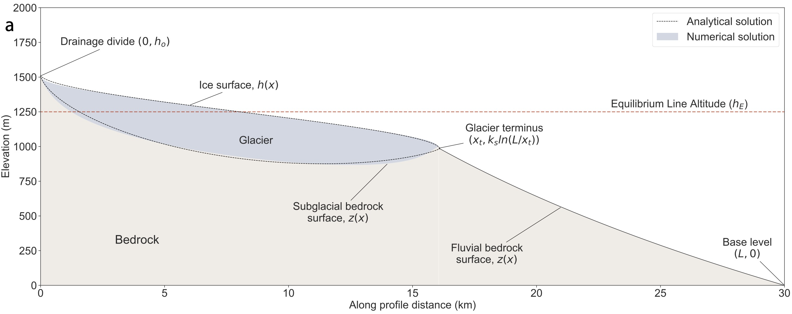

I am a researcher (Oberassistent) at ETH Zurich in the Earth Surface Dynamics group. I study rivers, and sometimes glaciers, with a focus on how they transport sediment, erode their beds, and how they interact with the landscape around them.
Research

Channel hydraulics and models of channel width
Rivers from around the world exhibit robust patterns in scale as a function of their average water flux (e.g. channel width), as shown in the large dataset of 3100 bankfull rivers above
(which exists thanks to the hard work of many people over many decades). Understanding why these patterns exist and what controls them is important to advancing understanding of rivers generally.
Of particular interest is what controls the width of rivers, which is still poorly understood, yet has important consequences for how rivers transport water and sediment.
Much of my recent research is concerned with developing a deeper understanding of river width using tools from continuum mechanics. I compiled the dataset shown above from literature, and it can be downloaded here.
Collaborators:
Santiago J. Benavides,
Qiong Zhang
Sediment transport
Bed load sediment transport is one of the most important processes that occurs in rivers, with implications ranging from the built environment to natural hazards to interpreting the geological record.
Despite over a century of research, there are still aspects of this process that are not well understood, and predictive models of sediment transport generally have errors up to a factor of five.
With a group of researchers from MIT and SFU, we have a longterm project to better understand sediment transport with a focus on grain scale processes such as the effects of grain shape, and the statistics of sediment entrainment.
The work is based on flume experiments carried out in the lab of Prof. Jeremy Venditti at SFU and high resolution modeling of bed load sediment transport. Some of the data produced by our experiments can be accessed here.
Collaborators:
J. Taylor Perron,
Jeremy G. Venditti,
Santiago J. Benavides

Rivers and landscape evolution
Much of the Earth's surface is shaped by the action of rivers through erosion and deposition.
Improved understanding of how rivers operate can be used to understand how rivers shape the Earth's surface over long periods of time, and help interpret the history of landscapes.
I am generally interested in these problems, but specifically in the conundrum posed by the dataset from Hilley et al.,, above,
which seems to show a maximum steepness index for high erosion rates. This implies a breakdown of some of the most fundamental landscape evolution models, and poses an issue for our understanding of how river networks shape the surface of the Earth.
Collaborators:
Jean Braun,
Sean Willett

Rivers of ice: glacial erosion and landscape evolution
In general understanding of how glaciers shape the Earth's surface is not nearly as well developed as understanding of how rivers do so. While there are many parallels between rivers and glaciers, there are also some key differences. Although it is not the main focus of my research, I am also interested in how glaciers shape the Earth's surface, and have done some work adapting approaches used to model rivers to glaciers, producing analytical models of steady state glacial topography as shown above, and available here.
Collaborators:
Jean Braun,
Günther Prasicek,
Sebastian Wolf
The animation below shows a time-varying glacial profile that is forced by a periodic climate signal. The climate signal takes the form of an equilibrium line altitude (ELA, shown as the red horizontal line) that moves up and down 1000 m over a period of 100,000 years. In the first part of the animation, the tectonic uplift rate is 2 mm/year, and then it is reduced to 1 mm/year. The thickness of the glacier is shown by the difference in elevation of the ice surface (blue line) and bedrock (gray line). Where there is no ice, the landscape is eroded by rivers.

Manuscripts in review
-
"Discrete simulations of fluid-driven transport of naturally shaped sediment particles"
Zhang, Q., Deal, E., Perron, J.T., Venditti, J., Benavides, S., Rushlow, M., Kamrin, K.
(Submitted to JGR: Earth Surface).
[preprint]
-
"Implicit algorithm for threshold Stream Power Incision Model"
Braun, J., Deal, E.
(Submitted to JGR: Earth Surface).
[preprint]
-
"El Niño Southern Oscillation (ENSO)-induced hydrological anomalies in central Chile"
van Dongen, R., Scherler, D., Wendi, D., Deal, E., Mao, L., Marwan, N., Meier, C.
(Submitted to HESS).
Published papers
-
"How fast or how many? Sources of sediment transport intermittency"
Benavides, S. J., Deal, E., Venditti, J.G., Zhang, Q., Kamrin, K., & Perron, J. T.
Geophysical Research Letters, 50.9 e2022GL101919, 2023.
[doi]
-
"Grain shape effects in bed load sediment transport"
Deal, E., Venditti, J.G., Benavides, S. J., Bradley, R., Zhang, Q., Kamrin, K. & Perron, J. T.
Nature, Nature 613.7943: 298-302, 2023.
[pdf]
[doi]
-
"Fluid-driven transport of round sediment particles: from discrete simulations to continuum modeling"
Zhang, Q., Deal, E., Perron, J. T., Venditti, J. G., Benavides, S. J., Rushlow, M., & Kamrin, K.
JGR: Earth Surface, 127, e2021JF006504, 2022.
[preprint]
[doi]
-
"The impact of intermittency on bed load sediment transport"
Benavides, S. J., Deal, E., Rushlow, M., Venditti, J.G., Zhang, Q., Kamrin, K., & Perron, J. T.
Geophysical Research Letters, 49, e2021GL096088, 2022.
[preprint]
[doi]
-
"Flow resistance in very rough channels"
Deal, E.
Water Resources Research, e2021WR031790, 2022.
[doi]
-
"The Sliding Ice Incision Model: A New Approach to Understanding Glacial Landscape Evolution"
Deal, E., and G. Prasicek.
Geophysical Research Letters, 48.1, e2020GL089263, 2021
[doi]
-
"A glacial buzzsaw effect generated by efficient erosion of temperate glaciers in a steady state model"
Prasicek, G., Hergarten, S., Deal, E., Herman, F. and Robl, J.,
Earth and Planetary Science Letters, 543: 116350, 2020
[doi]
-
"Struggles with stream power: Connecting theory across scales"
Venditti, J. G., Li, T., Deal, E.,, Dingle, E., and Church, M.
Geomorphology, 106817, 2019
[doi]
-
"Understanding the role of rainfall and hydrology in determining fluvial erosion efficiency"
Deal, E., J. Braun, and G. Botter.
Journal of Geophysical Research: Earth Surface, 123.4: 744-778, 2018
[doi]
-
"The response time of glacial erosion"
Herman, F., Braun, J., Deal, E., Prasicek, G.,
Journal of Geophysical Research: Earth Surface, 123.4: 801-817, 2018
[doi]
-
"Rainfall variability in the Himalayan orogen and its relevance to longterm erosion rates"
Deal, E., Favre, A.C. \& Braun, J.
Water Resources Research, 53.5: 4004-4021, 2017
[doi]
-
"N2O production in the eastern South Atlantic: Analysis of N2O stable isotopic and concentration data"
Frame, C.H., Deal, E., Nevison, C.D., Casciotti, K.L.
Global Biogeochemical Cycles, 28.11: 1262-1278, 2014
[doi]
Published datasets and code
-
"Grain Shape Dataset (MIT 2017-2022): Flume experiment data"
Deal, E., Venditti, J.G., Benavides, S. J., Bradley, R., Zhang, Q., Kamrin, K. & Perron, J. T.
Harvard Dataverse.
[doi]
-
"Downstream Hydraulic Geometry Data Compilation"
Deal, E., Philips, C., Rickenmann, D., Recking, A.,
Hydroshare, 2021.
[website]
-
"Analytical glacio-fluvial steady-state profiles"
Deal, E.
Github, 2020.
[website]